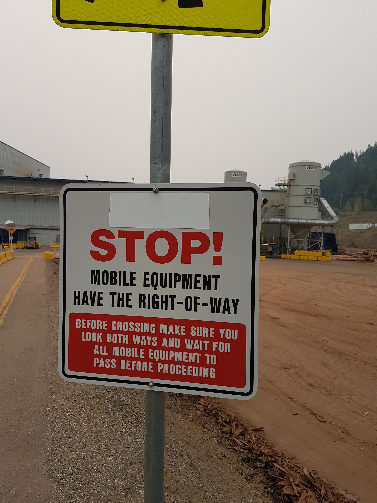
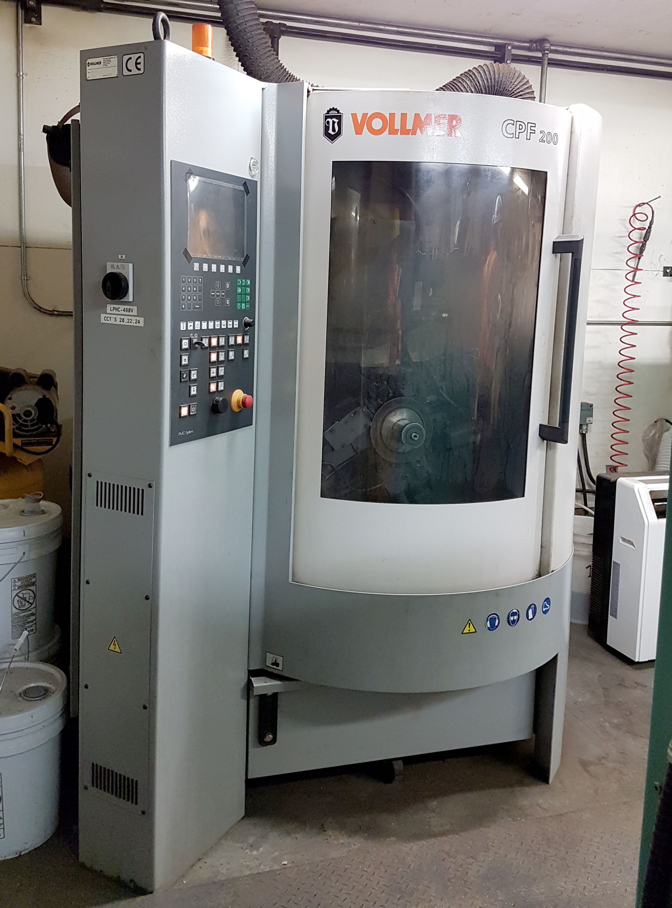

Provides dark mode functionality with a dark overlay that reduces eye strain and provides a comfortable reading experience in low-light conditions. Night mode can be toggled on and off as needed.
Usage
Night mode functionality is automatically available when experimental features are loaded. A night mode toggle button is automatically added to the page.
Available Controls
Night Mode Button: Automatically added to the page
Toggle Functionality: Click to switch between light and dark modes
Persistent State: Remembers user preference during session
Examples
Night Mode Toggle
Dark Mode Controls
A night mode toggle button is automatically added to the page. You can:
Click the night mode button to switch to dark mode
Click again to return to light mode
Use night mode for comfortable reading in low light
Reduce eye strain during extended reading sessions
Night Mode for Reading
Extended Reading Activity
This content is designed for extended reading sessions. Use night mode for comfortable reading in low-light conditions.
Reading Benefits
Reduced eye strain
Better focus in low light
Comfortable extended reading
Reduced blue light exposure
When to Use
Evening study sessions
Low-light environments
Extended reading periods
Reducing screen brightness
Comprehensive Content
This section contains detailed information about lumber processing techniques and safety protocols. The content is designed to be read comfortably in both light and dark modes.

Safety Information
Important safety guidelines for lumber processing operations.
Night Mode with Interactive Content
What is the primary benefit of night mode?
*Reduced eye strain
Faster loading
Better graphics
More features
When should you use night mode?
*In low-light conditions
*For extended reading
*To reduce eye strain
Only at night
Night Mode with Media Content
Video Content
Safety training video
Audio Content
Equipment sound guide
Night Mode for Assessments
Comfortable Assessment Experience
This assessment can be taken in night mode for a more comfortable experience, especially in low-light conditions.
What is the main purpose of a lumber mill?
*Process raw logs into finished lumber
Store finished products
Transport materials
Quality control only
Which safety equipment is required?
*Hard hat
*Safety glasses
*Steel-toed boots
Regular clothing
What does OSHA regulate?
@ Workplace safety and health standards
*Workplace safety and health standards
Product quality
Environmental protection
Employee benefits
Night Mode with Complex Layouts
Process Overview
Learn about the complete lumber processing workflow in comfortable night mode.
Raw Materials
Raw logs ready for processing
Processing

Logs being processed
Safety Protocols
Essential safety measures and procedures for lumber processing operations.
Always wear protective equipment
Follow established procedures
Report any hazards immediately
Maintain equipment properly
Quality Control
Standards and procedures for ensuring product quality.
Inspect raw materials
Monitor processing parameters
Test finished products
Document results
Night Mode Benefits
Health Benefits
Reduced eye strain
Lower blue light exposure
Better sleep quality
Comfortable extended use
Learning Benefits
Improved focus
Reduced distractions
Better concentration
Enhanced reading experience
Notes
Night mode button is automatically added to the page
Toggle between light and dark modes with a single click
State is remembered during the current session
Reduces eye strain in low-light conditions
Provides comfortable reading experience
Works with all content types and layouts
Particularly beneficial for extended reading sessions